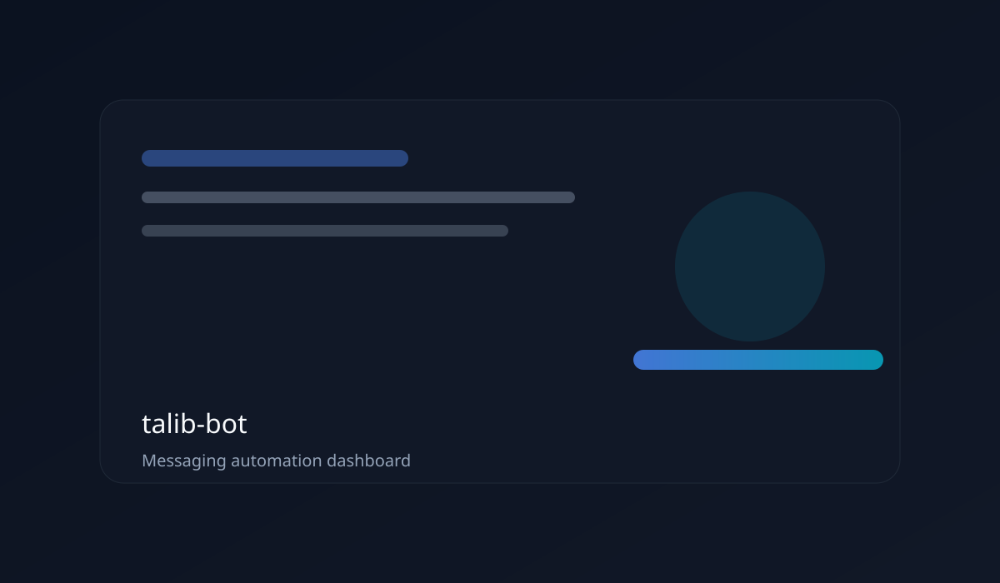
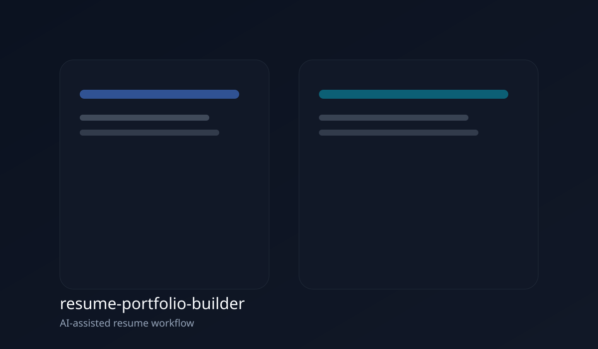
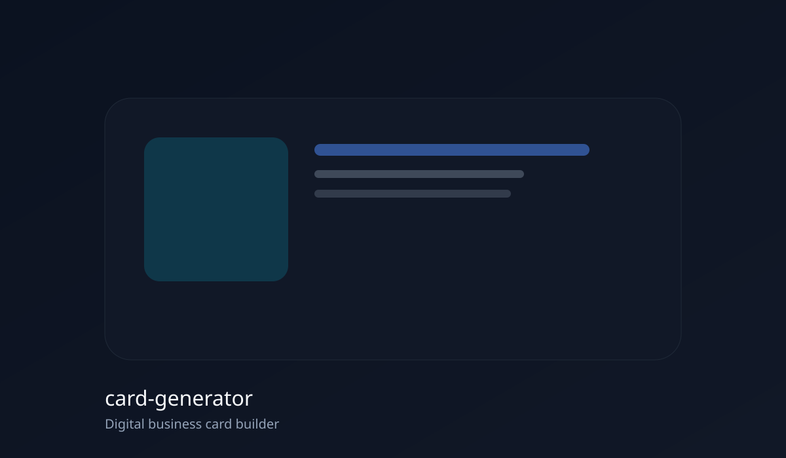
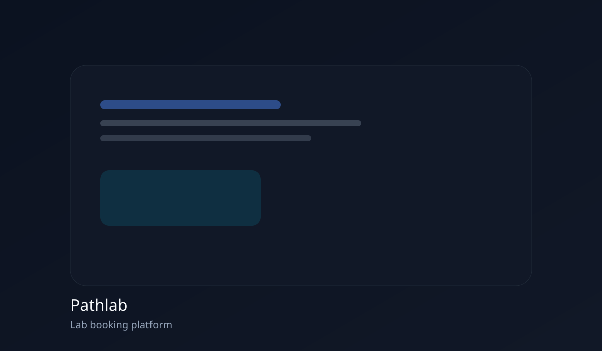
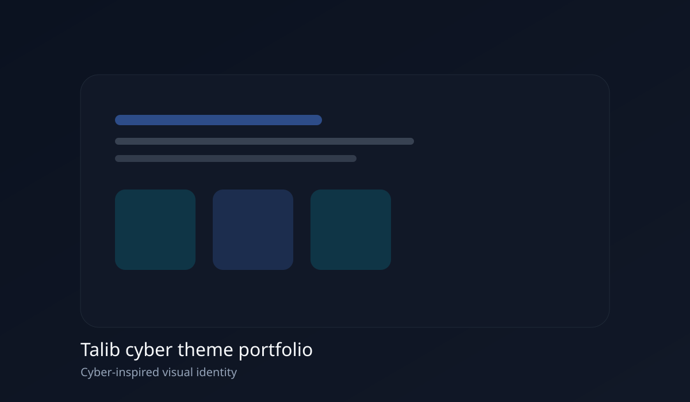

AI Automation
- AI agents
- LLM workflows
- Prompt engineering
- Automation systems
Talib · AI Systems Architect
AI Automation Developer focused on intelligent workflows, business automation, integrations, and modern network-aware systems.
15+
Automation pipelines deployed
30%
Average workflow speedup
99.9%
Uptime for integrations
About
I design and implement automation systems that bridge AI agents with real-world operations. From intelligent routing to API-driven workflows, I help teams move faster without sacrificing reliability.
My focus sits at the intersection of AI and networking: orchestrating tools, optimizing data flows, and making sure every workflow is observable, resilient, and secure.
Continuous learning is built into my process. I routinely test new model capabilities, integration patterns, and network optimizations to keep automation ecosystems ahead of the curve.
Core Expertise
Featured Projects

WhatsApp automation bot that uses a browser session to handle messaging workflows and operational alerts.




Process
Audit workflows, map dependencies, and isolate automation opportunities.
Architect resilient systems with clear inputs, outputs, and observability.
Deploy AI agents and integrations that move work forward autonomously.
Iterate on performance, accuracy, and network reliability.
Extend automation across teams with governance and continuous improvement.
Skills
GitHub
2.4k
Total contributions
38
Repositories
14
Featured builds
Contribution graph placeholder
AI agent orchestration with observability hooks.
API integration mesh with retry and alerting layers.
Network diagnostics toolkit for automation pipelines.
Testimonials
"Delivered a full automation overhaul in weeks. Our team spends more time on strategy now."
"Exceptional at mapping complex workflows and turning them into reliable AI-driven systems."
"The integration architecture is the best we have seen. Clear, measurable results."
Contact
Share the systems you want to modernize. I will respond with a clear plan for automation, integration, and measurable ROI.
Taking selective automation engagements.
Within 48 hours for qualified projects.
Fractional CTO, automation buildouts, AI systems design.